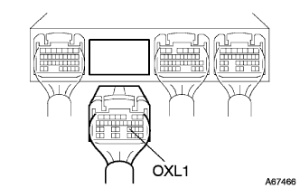
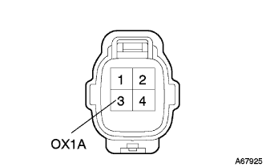

DTC P0130/21 O2 Sensor system B1S1 |
| DTC No. | DTC detection conditions
| Inspection site |
| P0130/21 |
|
|
reference).[*1]| Step 1 | Tascan data reading (O2 sensor voltage B1S1) |
|
| ||||
| NG | |
| Step 2 | Wire harness or connector inspection (engine controlled compilation-oxyde ensenza) |
|  |
Separate the connector B and oxyzes ensenas connectors B and oxyde Enseners.
|  |
Using Toyota Electrical Testers, check the conduction and short circuits between the engine control computers ← → oxyzes ensenas (terminal arrays are).reference).
| Measurement terminal (terminal name) Engine Control Company ← → Oxyzes Ensensa | standard |
| B23 (OXL1) ← → 3 (OX1A) | There is no conduction, there is no short circuit between other terminals and between body earth |
|
| ||||
| OK | ||
| ||
| Step 3 | Activation confirmation operation implementation |
Connect Tascan to DLC3.
Turn on the ignition switch and delete the diagnostic code according to the screen display of Tascan.
In order to confirm the system, a warm -up of oxyzes ensenza is performed by the driving test.
| GO | |
| Step 4 | Diagnostic code reading |
Connect Tascan to DLC3.
Turn on the ignition switch and read the diagnostic cord according to the screen display of Tascan.
Check if DTC P0130/21 is output.
| A | B |
| Display p0130/21 | Display normal code |
|
| ||||
| A | ||
| ||